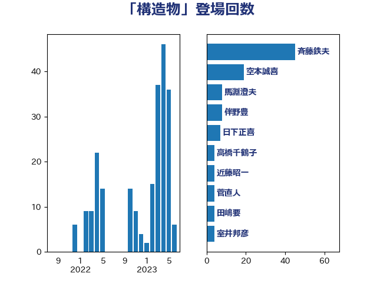

単語「構造物」

| 斉藤鉄夫 | 公明党 | 45 回 |
| 空本誠喜 | 日本維新の会 | 19 回 |
| 馬淵澄夫 | 立憲民主党 | 8 回 |
| 伴野豊 | 立憲民主党 | 8 回 |
| 日下正喜 | 公明党 | 7 回 |
| 高橋千鶴子 | 日本共産党 | 4 回 |
| 近藤昭一 | 立憲民主党 | 4 回 |
| 菅直人 | 立憲民主党 | 4 回 |
| 田嶋要 | 立憲民主党 | 4 回 |
| 室井邦彦 | 日本維新の会 | 4 回 |
| 鬼木誠 | 立憲民主党 | 3 回 |
| 山本剛正 | 日本維新の会 | 3 回 |
| 城井崇 | 立憲民主党 | 3 回 |
| 高木真理 | 立憲民主党 | 2 回 |
| 鈴木敦 | 国民民主党 | 2 回 |
| 石井浩郎 | 自由民主党 | 2 回 |
| 浜口誠 | 国民民主党 | 2 回 |
| 末次精一 | 立憲民主党 | 2 回 |
| 伊波洋一 | 無所属 | 2 回 |
| 馬場雄基 | 立憲民主党 | 1 回 |
| 青山繁晴 | 自由民主党 | 1 回 |
| 長坂康正 | 自由民主党 | 1 回 |
| 野間健 | 立憲民主党 | 1 回 |
| 進藤金日子 | 自由民主党 | 1 回 |
| 足立敏之 | 自由民主党 | 1 回 |
| 羽田次郎 | 立憲民主党 | 1 回 |
| 穀田恵二 | 日本共産党 | 1 回 |
| 福島伸享 | 無所属 | 1 回 |
| 神谷裕 | 立憲民主党 | 1 回 |
| 石井章 | 日本維新の会 | 1 回 |
| 田中健 | 国民民主党 | 1 回 |
| 浜野喜史 | 国民民主党 | 1 回 |
| 林芳正 | 自由民主党 | 1 回 |
| 早坂敦 | 日本維新の会 | 1 回 |
| 平林晃 | 公明党 | 1 回 |
| 小里泰弘 | 自由民主党 | 1 回 |
| 宮崎雅夫 | 自由民主党 | 1 回 |
| 大石あきこ | れいわ新選組 | 1 回 |
| 和田政宗 | 自由民主党 | 1 回 |